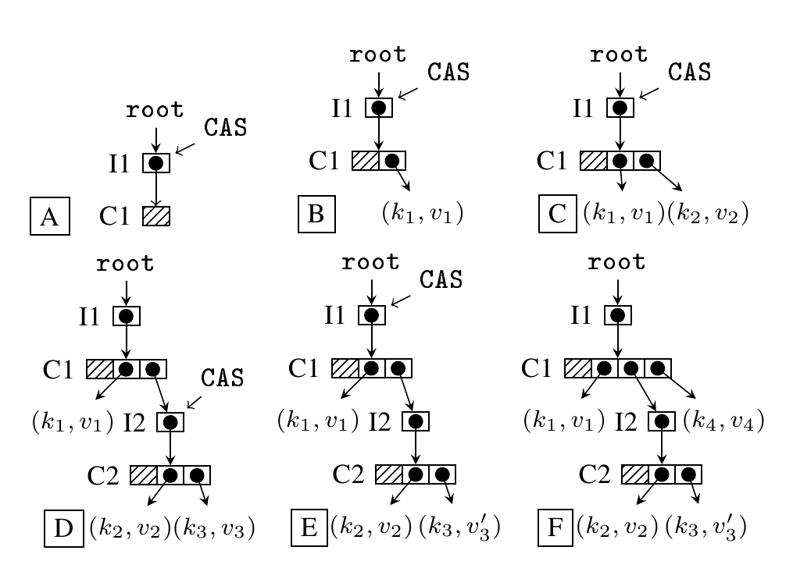

ctries_go
May grow up to be a Ctries implementation for the Go programming language.
A concurrent hash-trie or Ctrie is a non-blocking concurrent shared-memory hash trie based on CAS, the single word compare-and-swap instruction. CAS is an atomic, non-interruptable operation; this makes it possible to devise safe optimistic algorithms which attempt an operation and then confirm whether it has succeeded by inspecting the value that the CAS operated on. If it has the expected value, the operation succeed; otherwise it failed and so must be re-tried or abandoned.
The use of the CAS instruction makes it possible to do away with locks, which require calls to the operating system kernel and so are slow and inefficient. In other words, the Ctrie algorithm is lock-free, non-blocking.
A Ctrie consists of a fixed-size set of hash tables, each cell of which
is either null or a pointer to a leaf key-value pair or a pointer to a
indirection node. The tables contain 2^w entries, where w is 5
(for a Ctrie with 32-bit keys) or 6 (for a table with 64-bit keys).
An indirection node or i-node isolates a table from its parent. At any given time the i-node points to its current child table.
Operation

The figure above illustrates the use of the CAS instruction in insert operations.
If a child table is to be changed, the system constructs a copy of the child table with any changes to be made. It then uses CAS to swap the old to the old child with a pointer to the new child. If after the swap the i-node points to the new child, the operation has succeeded. Otherwise the operation has failed (because some other thread has successfully updated the i-node to point to an alternate child) and so the operation must be abandoned or retried.
At A in the figure the root’s i-node (I1) is modified to point to a new
child table, C1. This table is empty.
At B, a replica of C1 is modified to add a pointer to a leaf node
with hash k1 and value v1. A CAS operation is used to modify the
root i-node to point at the new C1; the old version of the table
will need to be garbage-collected.
This process is repeated at C. A new leaf with key k2 and value v2
is added to a replica of C1. A CAS causes I1 to point to the new
C1 and the old C1 is off for garbage collection.
At D there is a hash collision: a new leaf node <k3, v3> is to be
added but the first w bits (the prefix) of k2 and k3 are the same,
so a candidate i-node I2 and a new table C2 are created. C2 has
pointers to the old <k2,v2> leaf node and the new <k3, v3> leaf node.
At E a CAS on I1 switches the second pointer in C1 to point to I2
rather than <k2,v2>. At F another leaf entry is added at the top
level, with a CAS on I1 modifying C1 to add a pointer to the new
<k4,v4> leaf.
Where the tries are larger, concurrent operations on distinct subtrees
will be possible,
Planned Implementation
Ctries_go will be based on the HAMT data structure. For a recent implementation of HAMT in the Go programming language, see hamt_go.
References
Prokopec, Bagwell, and Odersky, Cache-Aware Lock-Free Concurrent Hash Tries, 2011.
Project Status
A very rough spec and some test code.
Licensing

The material on this github.io website is licensed under a Creative Commons Attribution 4.0 International License.
Project software is licensed under an MIT license. Follow the SOFTWARE LICENSE link below for more information on project software licensing.